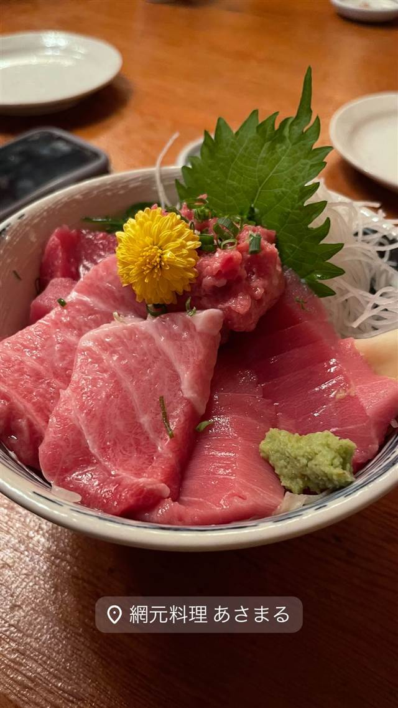

囲炉茶屋
築70年の旧旅館を改装、囲炉裏で串を炙って食べる海鮮丼店
囲炉茶屋
WHY GO
約70年の旧旅館を改装した建物で各卓の囲炉裏で自分で串を炙って食べる
囲炉茶屋は熱海駅から徒歩約2分、約70年の歴史を持つ旧旅館の建物を改装した海鮮料理店。民芸調の内装の中、地物の魚介を使った「金の玉手箱」などの海鮮丼が名物で、夜は各テーブルの囲炉裏で串ものを自分で炙って食べられる。
TRIVIA
豆知識
- 約70年前の旅館だった建物をそのまま改装して使っており、内装は民芸調の趣がある
- 各テーブルに囲炉裏があり、夜は自分で串ものを炙って食べるスタイルが楽しめる
REVIEWS
世間の評判
3.49食べログ
海鮮丼のボリュームと待ち時間
- あら汁や金目鯛の煮付けなど味の良さを評価する声が多い
- 海鮮丼の盛りが多すぎるほどのボリュームを評価する声が多い
- ピーク時は15分から20分以上待つことがあるという声が多い
- 値段はやや高めだが納得できるという声がある
食べログ 口コミ1332件
| 看板 | 海鮮丼（「金の玉手箱」「海の玉手箱」「金の伊豆天丼」など）、ローストビーフ丼 |
|---|---|
| こだわり | 地物の魚介を使った刺身・干物定食・海鮮丼を提供。各テーブルに囲炉裏が設置され、夜は山海の幸の串ものを自分で炙って食べられる。 |
| どこから | 日帰りで行ける遠さ |
| 営業時間 | 月 11:30-15:00、16:30-21:00 火 休み 水〜日 11:30-15:00、16:30-21:00 |
| 予算 | 夜 ¥3,000～¥3,999 |
| 場所 | 熱海駅 静岡県熱海市田原本町2-6 |
| メモ | 熱海駅から徒歩約2分。約70年の歴史を刻む旧旅館の建物を改装した民芸調の内装で、1階の畳敷き和室や2階席から海を望める。 |
食べたもの：海鮮丼定食
NEARBY
近い店・同じ系統の店
-
 ピザ 伊豆多賀駅（熱海駅からバス・タクシー推奨）
CODA ROSSA（コーダロッサ）
熱海ACAOリゾート内、全室オーシャンビューで味わうナポリピッツァ
昼 ¥2,000～¥2,999 夜 ¥6,000～¥7,999
ピザ 伊豆多賀駅（熱海駅からバス・タクシー推奨）
CODA ROSSA（コーダロッサ）
熱海ACAOリゾート内、全室オーシャンビューで味わうナポリピッツァ
昼 ¥2,000～¥2,999 夜 ¥6,000～¥7,999
-
 カフェ 伊豆多賀駅（熱海駅からバス・タクシー推奨）
COEDA HOUSE（コエダハウス）
隈研吾設計の建物越しに相模湾を一望できるバラ園内の絶景カフェ
昼 ¥1,000～¥1,999 夜 ¥1,000～¥1,999
カフェ 伊豆多賀駅（熱海駅からバス・タクシー推奨）
COEDA HOUSE（コエダハウス）
隈研吾設計の建物越しに相模湾を一望できるバラ園内の絶景カフェ
昼 ¥1,000～¥1,999 夜 ¥1,000～¥1,999
-
 アイス・ジェラート 熱海駅
熱海プリン（本店）
熱海温泉の源泉水を使いじっくり蒸し上げる土地由来のプリン
昼 ～¥999 夜 ～¥999
アイス・ジェラート 熱海駅
熱海プリン（本店）
熱海温泉の源泉水を使いじっくり蒸し上げる土地由来のプリン
昼 ～¥999 夜 ～¥999
-
 ケーキ・パフェ 来宮駅
住吉屋 熱海本店
Kiriのクリームチーズ使用、口でとろけるチーズケーキ
昼 ～¥999 夜 ～¥999
ケーキ・パフェ 来宮駅
住吉屋 熱海本店
Kiriのクリームチーズ使用、口でとろけるチーズケーキ
昼 ～¥999 夜 ～¥999
-
 海鮮丼・定食 麻布十番
旬の味 たき下
京都の名店で修行した店主が炭火で焼く魚定食
昼 ¥2,000～¥2,999 夜 ¥8,000～¥9,999
海鮮丼・定食 麻布十番
旬の味 たき下
京都の名店で修行した店主が炭火で焼く魚定食
昼 ¥2,000～¥2,999 夜 ¥8,000～¥9,999
-

海鮮丼・定食 茅ヶ崎駅 網元料理あさまる本店 自社の漁船「あさまる」が水揚げした地魚をその日のうちに提供する網元直営店 昼 ¥1,000～¥1,999 夜 ¥2,000～¥2,999